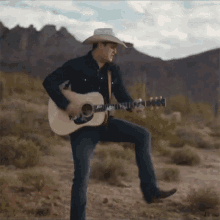
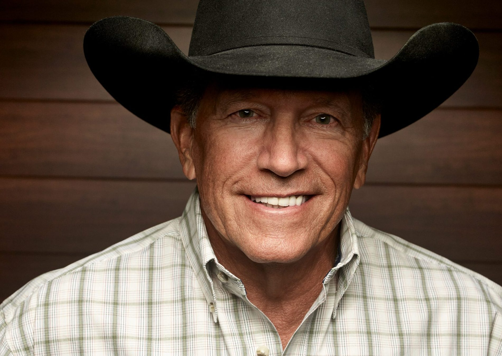

La música country es un género musical de origen estadounidense que tiene sus raíces en la música folclórica y popular de las zonas rurales del sur de los Estados Unidos. Se caracteriza por:
Instrumentación: Suelen incluir instrumentos como la guitarra acústica, el violín, el banjo, el pedal steel guitar, el contrabajo y la armónica. Estos instrumentos a menudo se utilizan para crear armonías y melodías tradicionales del género.
Letras y témáticas: Las letras de las canciones suelen tener temas de la vida(romance,amor,felicidad,perdida,etc...)
Subgeneros: Amplia variedad de subgéneros, que van desde el country tradicional y el honky-tonk hasta el country pop, el country rock y el outlaw country, entre otros. Cada subgénero presenta sus propias influencias musicales y estilos distintivos.
La música country tiene sus raíces en la fusión de estilos musicales europeos, africanos y de los Apalaches en los siglos XVIII y XIX en los Estados Unidos. A lo largo del siglo XX, experimentó un notable crecimiento y evolución, diversificándose en subgéneros como el honky-tonk, el outlaw country y el country pop, entre otros.
Artistas icónicos como Hank Williams, Johnny Cash y Dolly Parton contribuyeron significativamente a su evolución y éxito tanto a nivel nacional como internacional. En la actualidad, la música country continúa fusionando tradiciones musicales con sonidos contemporáneos, manteniendo su identidad distintiva y una profunda conexión con la vida rural y las experiencias cotidianas.

George Strait es un cantante y compositor estadounidense de música country ampliamente reconocido como uno de los máximos exponentes del género. Nacido el 18 de mayo de 1952 en Poteet, Texas, ha vendido más de 100 millones de discos en todo el mundo y ha acumulado numerosos premios y reconocimientos a lo largo de su carrera.
Su canción mas famosa es " All My Ex's Live in Texas"